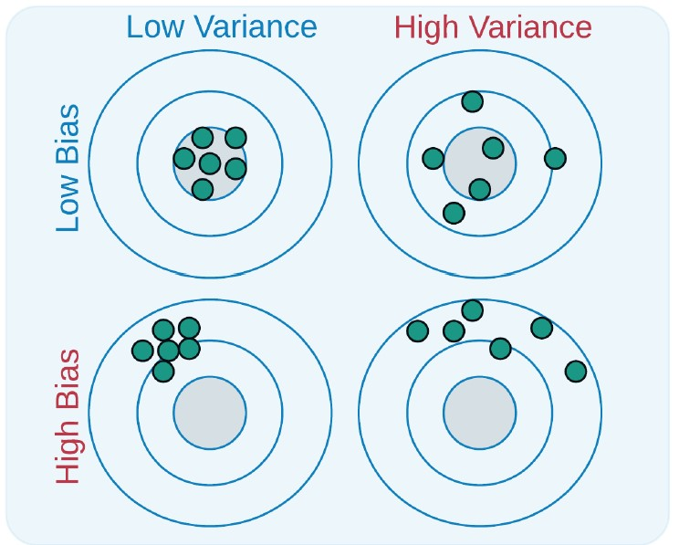

1 Introduction
1.1 Linear regression overview
Regression is the predicting or learning of numerical features in statistics and machine learning. This process includes the prediction of numeric as well as categorical attributes. Performing a regression allows for the determination of which factors in situations matter, what is their impact, and how they influence other factors. Regression allows for data driven decisions that eliminate guesswork. ((Joshi and Saxena 2020))
Simple linear regression finds the relationship between a dependent and independent variable whereas multiple linear regression can find the relationship between the dependent and multiple independent variables. ((Joshi and Saxena 2020))
The data is modeled on a graph and a line is fitted to the data. This allows for the calculation of the coefficients of the independent variable or variables. ((Joshi and Saxena 2020))
1.1.1 Regression line fitting
Regression line fitting is a delicate balance as the line should predict the desired value well based on several features but be applicable enough to be used repeatedly with different samples of data. The line should not be under-fitted, which would not provide an accurate prediction. The line also should not be over-fitted to the sample, which would cause the model not to work well with different samples and the data at large. ((Jabbar and Khan 2014))
Several methods can be used to ensure appropriate line fitting. We can compare the data to the AUC Curves which determining the curves predictive ability by quantifying with the Area Under the Curve. The higher the AUC the more predictive the model. The data is separated into two parts. 80% of the data is labeled as the training or estimation data and 20% of the data is labeled as the validation set. Both parts of the data are tested to ensure the AUC values are similar.((Aheto et al. 2021))
The penalty method is important to prevent over-fitting. We set \(E_{train}\) and \(E_{test}\) to be the training set error and test error, respectively. We then try to find a the minimal penalty such that \(E_{test} = E_{train} + Penalty\) ((Jabbar and Khan 2014))
The early stopping method is used for the prevention of both over and under-fitting. The sample data is broken down into three parts: training, validation, and testing. This data is then broken down in to the similar 80%/20% split to estimate the line and then to validate the process. ((Jabbar and Khan 2014))
1.1.2 Bias and variance
Bias measures the amount of deviation from the expected value is from the estimator in the models. Variance measures how far the data fluctuates. (Mehta, Bukov, Wang)
If we consider the bulls eye as an example: low bias indicates that the estimators are in the vicinity of the bulls eye and low variance indicates that the estimators are close together like in a cluster. ((Gudivada 2017))

1.2 Regularization
Regularization was introduced in the context of dealing with the matrix inverse. This inverse issue caused the answer to live outside the of the needed mathematical space. The introduction of the regularization parameter is a smoothness penalty which allowed the problem to be solved. ((Fan et al. 2006))
The fitting of models with large numbers of parameters also has similar issues in which makes the models unstable. This issue requires the need for regularization to get a sensible model. The LASSO regression also has a penalty to ensure the model is stable and thus works with the data. ((Fan et al. 2006))
Ordinary least squares needed improvements due to the issue with large variance even though the process has a low bias. Shrinking or setting the coefficients to zero can improve the accuracy of the predictions. This process can introduce some bias but will reduce the variance which can improve the prediction accuracy. ((Hastie and Tibshirani 2015))
1.2.1 LASSO
LASSO or Least Absolute Shrinkage and Selection Operator is a regularized regression modeling method that performs variable selection and regularization. These two components allow for better accuracy in prediction and interpretation in the model. ((Emmert-Streib and Dehmer 2019)).
In the variable selection side, LASSO regression identifies the proper variables that will minimize prediction error and lessen the computer-intensive nature. Less variables mean less computational power is needed. (Ranstam, Cook)
The selection of variables comes from a constraint on the model parameters. This is done by forcing the sum of the absolute value of these coefficients to be less than a fixed value \(\lambda\). This constraint lowers the complexity of the model by eliminating variables from the model that are reduced to zero after the shrinkage. (Ranstam, Cook)
This shrinking of some of the coefficients to zero provides for an automated way for doing model selection in linear regression. ((Hastie and Tibshirani 2015))
\(\lambda\) is chosen using an automated k-fold cross-validation approach. This approach is were the data is partitioned into sub-samples of equal size. k-1 out of k sub-samples are used for developing the model with the \(k^{th}\) sample used to validate the model. This process is done k times to ensure each sub-set k is used to validate the model as some point. This process provides a range of values for \(\lambda\) and provides a data set to determine a preferred \(\lambda\). (Ranstam, Cook)
LASSO is not perfect. LASSO trades off the potential bias of individual parameter estimates for a better overall prediction. (Ranstam, Cook). This method allows for the determination of a smaller subset of predictors that shows the strongest effects on the model. ((Hastie and Tibshirani 2015)) Important disadvantage to note is that the individual regression coefficients may be less reliable to interpret individually (Ranstam, Cook).Also, LASSO is not capable of selecting more predictors than the number of of observations in the sample.((Emmert-Streib and Dehmer 2019)).
The focus of the LASSO regression is to provide the best overall prediction and to reduce the number of variables to identify the predictors of importance not to interpret the meaning of individual predictor coefficients or keep excessive predictors. (Ranstam, Cook).
1.2.2 Ridge Regression
Ridge Regression is a regularized regression model that predates LASSO. ((Hastie and Tibshirani 2015)). Again, the need for improving the ordinary least squares comes from the fact that these models have a low bias but large variance. We can trade off some of the large variance by introducing some estimation bias allowing for accuracy of the prediction to improve. The preferred \(\lambda\) in this model is different from the LASSO \(\lambda\) as this ridge parameter reduces the coefficients toward zero without eliminating the the variables completely by reducing coefficients to zero.((Emmert-Streib and Dehmer 2019))
Ridge Regression works best when the ordinary least squares estimates have a high variance and the number of predictors is larger than the number of samples. The benefit of this method is the trade off of reducing the variance by increasing a low bias which can improve the prediction accuracy of the model.((Emmert-Streib and Dehmer 2019))
The downfall with this method is the reduction of the coefficients toward zero not to zero. Ridge regression therefore does not provide variable selection as the LASSO method. ((Emmert-Streib and Dehmer 2019))
1.2.3 Elastic Net
The elastic net was designed to improve the LASSO method as well as combine the benefits of LASSO and ridge regression. The elastic net has the benefit of LASSO regression as this method can perform variable selection and the benefit of ridge regression since it can be used in cases where the number of predictors is larger than the number of observations. Recall that ridge regression cannot perform variable selection and LASSO cannot manage cases with the number of predictors is much larger than the number of observations.((Emmert-Streib and Dehmer 2019))
An issue that can arise from the LASSO is in situations with strongly correlated predictors the variable selection method keeps only the strongest variable. Whereas, the elastic net tends to keep these strongly correlated predictors together in the model with its underlying grouping technique. ((Emmert-Streib and Dehmer 2019))
The elastic net is able to blend the methods of LASSO and ridge regression by combining the squared penalty both methods and weighing them based on the number of correlated predictors. ((Hastie and Tibshirani 2015))